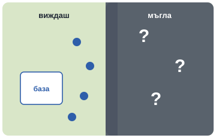

StarCraft II е стратегическа игра в реално време: събираш ресурси, строиш база и управляваш армия, всичко едновременно. И не виждаш цялата карта: противникът може да подготвя изненада там, където не гледаш.
През януари 2019 г. DeepMind показва, че AlphaStar е победил професионалистите TLO и MaNa с 5:0 и 5:0 (мачовете са изиграни през декември 2018 г.). В демонстрационна партия на живо MaNa побеждава нова версия на AlphaStar. През октомври 2019 г. AlphaStar достига ниво Grandmaster — над 99,8% от класираните играчи. Учи се първо от човешки игри, после в „лига“ от агенти, които се състезават помежду си.
Защо лига, а не просто игра срещу себе си? Пробвай вдясно.
Колкото по-сложен е светът, толкова по-важни са скритата информация, приспособяването и разнообразните противници.
За любопитните
Скрита информация има и в картите. През 2021 г. системата DouZero се научава да играе китайската игра на карти DouDizhu чрез игра срещу себе си. Представи си белот: знаеш своите карти и изиграните, но не и кой какво държи.
Компютърът може да натиска бутони много по-бързо от човек. Затова в окончателната версия AlphaStar гледа играта през „камера“ като човек, а броят на действията му в минута е ограничен до нива, сравними с професионалистите.